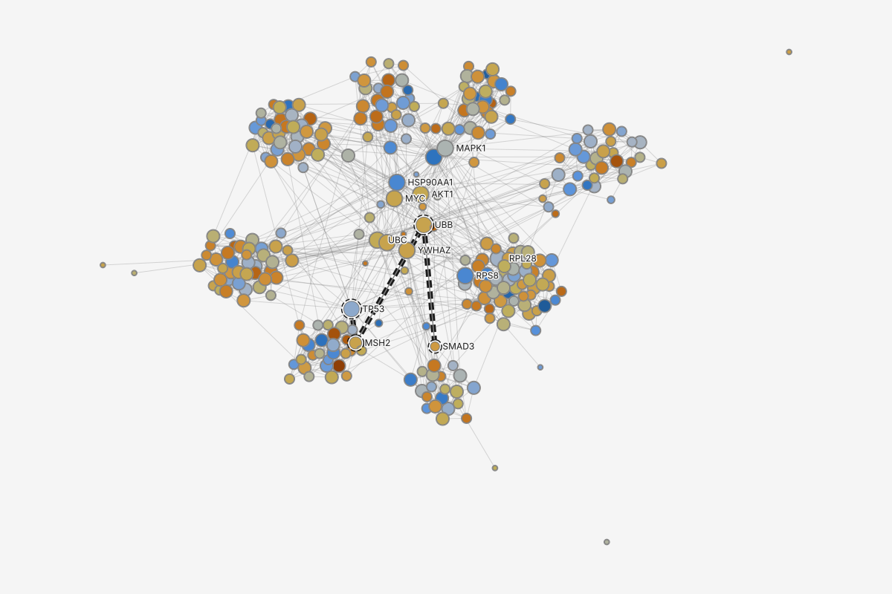
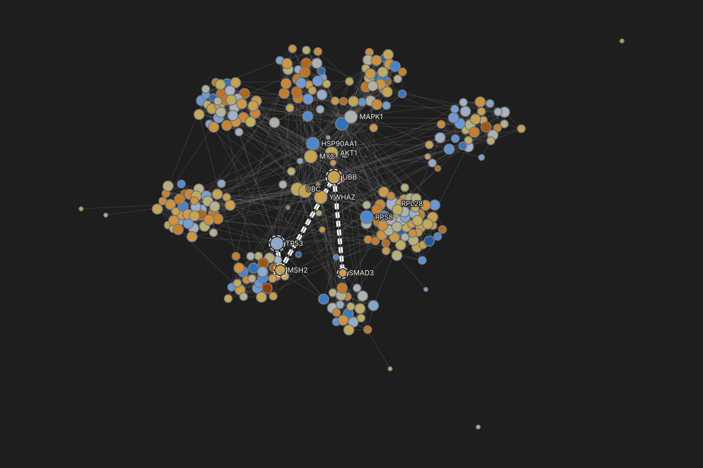
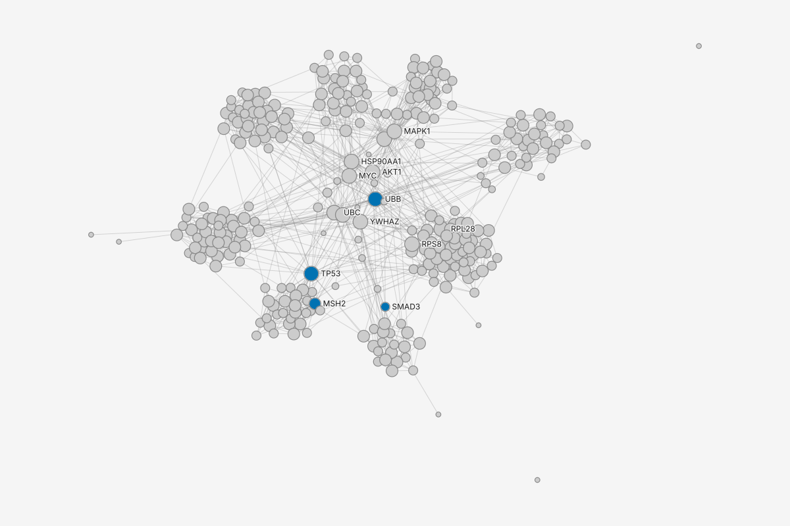
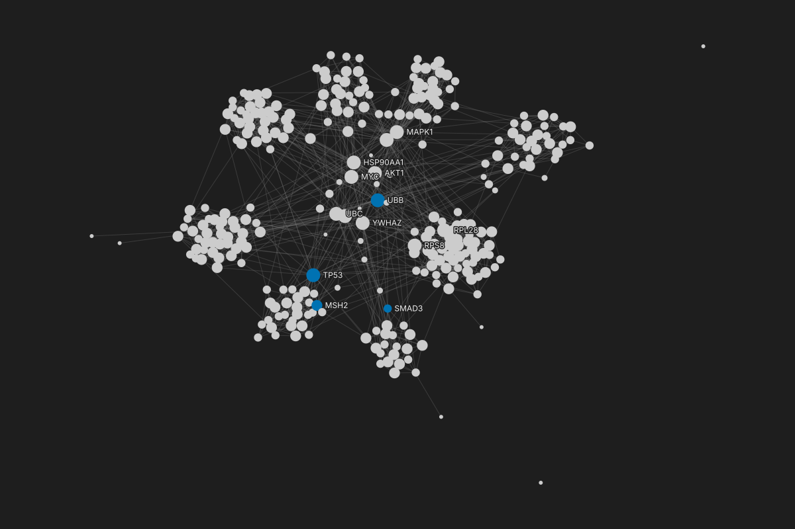

Color or size by a value
A researcher wants fold change to show as color and connectivity as size, then marks a shortest path on top, and must be able to say exactly what each color and size means. This page traces that task through the real places of the app: the four ways in, how an attribute that does not fit is refused before it can be chosen, where the legend reads the result back, how a binding goes back to one value, and what happens on every error and cancel. The mocks for each step are on the screens page.
| Task | Color or size by a value; paint a set or a selection with one color, or bind it to a value. The eighth of the top tasks. |
|---|---|
| Serves | The weekly return, its Publish stage: Friday's figure and its methods. |
| Who | Dr. Chen, a computational biologist, on the kit's 300-protein network: 1,262 interactions, log2 fold change from -2.52 to 3.15, eight modules and 26 unassigned proteins. |
| Starts from | Rest (the graph's inspector, nothing selected), a result, an attribute (a table column header, a node's value row in the inspector, or an attribute row in the Graph panel), the Styles list, or a set or several selected nodes. |
| Scale | The same at every graph size. Past the edge drawing limit an edge channel binds but is not drawn, and the legend says so. |
| Figma's route | Select the object, the Fill section's four-dot button (Figma's "Apply styles and variables"), a variable: 2 steps, 1 travel. graphty's Styles route is the same count. The result and attribute routes are 1 step shorter, a departure listed below. |
| What she can claim | "Color encodes log2 fold change on a linear scale diverging at 0, blue below and orange above; no protein lacks a value; size is degree, the number of interaction partners with each partner counted once, with circle area proportional to degree; the key shows degree 4, 6, 8, 12 and 34 at their true size; the path from TP53 to SMAD3 is marked and nothing else was repainted." |
| What reproduces it | Each layer's undo entry and its encoding: attribute, scale, palette, domain and midpoint, and for size the mapping (area or linear) and whether repeats count, all named in the legend in the words above. |
Key
Shapes with an underlined label open the screen mock of that step. In the counts, a step is a command given or a choice made; travel is a click that only opens something (a menu, a popover, a section). In the tables, Built by says who does the work: Element (graphty-element alone), App (the app's own chrome) or Surfaced (graphty-element does it, and the app shows its control). The four-dot button is the section header's "Apply styles and variables" button, as in Figma.
1. Color or size by a value
Four doors lead in, and each one shows only what fits before anything is chosen. The Styles list's "+" adds an empty layer, and its Fill section's four-dot button opens the attribute picker: attributes that fit the channel first, the rest listed below, disabled, each with the reason. A result's editor offers only the verbs its result allows. An attribute's menu, opened from a table column header, a node's value row in the inspector or an attribute row in the Graph panel, offers Color by and Size by, with a verb the attribute's level refuses shown disabled with the reason. So whichever door is used, the attribute's measurement level decides what can be chosen and which scale it gets; nothing is refused after the choice.
The dashed hexagon at the right follows the recommended answer to an open owner decision: whether a finished run repaints the graph. Until that is decided and graphty-element reports, per run, which layer held each channel, the message cannot be shown.
| Step | Place | Command | Pattern | Undo label | Trust check | Built by | Element need | Screen |
|---|---|---|---|---|---|---|---|---|
| add a layer | the Styles list's "+" | Add style layer | Add with defaults, configure after | "Add style layer" | the new layer sits on top of the Styles list, its editor open | Surfaced | session.styles.add | 1 |
| bind | the layer's Fill four-dot button; the attribute picker | an attribute | Bind a property to an attribute | "Color Style layer 1 by log2FoldChange" (the layer is then named "log2FoldChange color") | refused attributes stay listed, disabled, with the reason | Surfaced | session.styles.update; the filtered list is missing: "Channels that cannot be bound flagged on their descriptor" | 1, 6 |
| add by a verb | a result editor's Appearance; an attribute's menu (table header, inspector value row, Graph panel row) | Color by; Size by | Add with defaults, configure after; Context menu, overflow and tooltips (the attribute's menu) | "Add log2FoldChange color"; "Add Size: degree" | the new layer on top; a verb the level refuses is disabled with the reason | Surfaced | session.styles.encode (result); from an attribute, missing: "One scale default on both write paths" and "encoding a data attribute, keyed so a repeated verb edits its earlier layer" | 3, 4 |
| check the scale | the bound pill; the legend | -- | Encoding kinds follow the measurement level | no undo entry | the scale in words: "one color per value"; "linear, diverging at 0, blue below, orange above"; "area proportional to degree; each partner counted once", over five true-size circles | Surfaced | missing: "A declared measurement level" | 2 |
| yield (only if a run's layer writes this channel) | that run's editor, Appearance | Apply anyway (optional) | Edit in the inspector and one popover (an automatic layer) | "Apply Degree color anyway" | "Color set by log2FoldChange color" | Surfaced | missing: "A per-run outcome for each suggested channel"; the suppression check itself has a defect, missing: "Automatic paint suppressed only for elements a higher authored layer paints" (issue #551) | 3 |
| tune the scale | the encoding popover, from the bound row's settings button | scale, palette, Reverse, midpoint, steps | Edit in the inspector and one popover | "Change palette of log2FoldChange color" | the legend repaints with the new sentence | Surfaced | session.styles.update | 2 |
| fix at one value | the encoding popover's header | Fix at <value> ("Fix at 5.1 px, the median, degree 8") | Bind a property to an attribute (Fix at) | "Fix Size: degree at 5.1 px" | the row shows a constant and the legend block disappears | Surfaced | StylesApi.resolveToStatic; naming the value before pressing, missing: "a preview of a static resolution" | 2 |
| read back | canvas legend; inspector value row; table header and chits | -- | From a painted value to its layer and its datum | no undo entry | all three read the resolved paint, never recompute it | Surfaced | session.styles.legend(), session.styles.explain; the table's chits, missing: "A bulk read of encoded values for a column of the table" | 4 |
| back to the layer | the table header's encoding chit | opens the style-layer editor | From a painted value to its layer and its datum | no undo entry | the editor's Applies to row and the attribute it reads | Surfaced | session.styles.explain | 5 |
Steps from rest. From the Styles list: 2 steps ("+", the attribute) and 1 travel (the four-dot button), the same as Figma's. From a result: 1 step (Size: degree) and 1 travel (the result's row). From an attribute: 1 step (Color by) and 1 travel (its menu). Tuning adds 1 travel (the settings button) and 1 step per change; Fix at is 1 step after the same travel.
The size key
A size layer has one name everywhere: "Size: degree" on its Styles row, as its legend block's title, in its editor's header and in its undo labels. Its key draws five circles at the size they are on the canvas at the current zoom, at round values taken from the data's own spread: degree 4, 6, 8 and 12 (the 10th, 25th, 50th and 90th percentiles of the 300 proteins) and 34, the largest. Under them it says, in words, whether size maps to area (the default: circle area proportional to the value) or is linear (diameter proportional to the value), and whether repeated connections count. Hovering or selecting a protein adds its own value to the key, "MAPK1: degree 34", and the canvas tooltip carries the same words. Proteins with degree 0 or 1 (10 of 300) are drawn at the smallest size the canvas allows, and the key says so only when such proteins exist.
Switching the encoding popover's Scale to Linear changes the first line to "Diameter proportional to degree. Each partner counted once." On data with repeated edges between the same pair, the second clause reads "Repeats counted" or "Each partner counted once", as graphty-element computed the degree.
2. Paint a set or a selection, or bind it to a value
A kept set's Appearance writes to the set's own layer, so a second color revises that layer instead of growing the stack. Several selected nodes are painted straight away, as in Figma, with no question first. A color goes into Overrides at once, the layer that holds hand-set constants. A value opens the attribute picker, whose first choice makes the set and its layer in one step, and whose lower group colors every node instead. Keeping the selection as a set is offered by the picker's labels and, afterwards, on the Overrides row; it is never asked up front.
| Step | Place | Command | Pattern | Undo label | Trust check | Built by | Element need | Screen |
|---|---|---|---|---|---|---|---|---|
| open | a set's, or several nodes', Appearance | the fill swatch; the four-dot button | Edit in the inspector and one popover | no undo entry | the value, or "Mixed" | Surfaced | session.styles.explain | set, several |
| first write on a set | color picker; attribute picker | a color; an attribute | Bind a property to an attribute | "Add DNA repair hubs color"; "Add Size: degree on DNA repair hubs" | the layer appears on top, named for the set | Surfaced | session.styles.add with a member selector on the set | none yet |
| later writes on a set | color picker | a color | Bind a property to an attribute | "Change color of DNA repair hubs color" | the value row names the layer being edited | Surfaced | session.styles.update; finding the set's layer, missing: "encoding a data attribute, keyed so a repeated verb edits its earlier layer" | none yet |
| paint a selection | several nodes' Appearance; color picker | a color | Commit, the write rule and Mixed | "Override color of 6 nodes" | the Overrides row counts them and offers Create set | Surfaced | missing: "The Overrides layer" | none yet |
| bind a selection | several nodes' Appearance; attribute picker | Create set and color by degree | Bind a property to an attribute | "Create set and color by degree" | the new set's name opens in rename, and its layer is on top | Surfaced | one element command that makes the set and its layer, missing: "encoding a data attribute, keyed so a repeated verb edits its earlier layer" (the same key serves a set's Appearance) | none yet |
| bind every node | attribute picker, lower group | Color by degree (all nodes) | Bind a property to an attribute | "Add degree color" | the row says "all nodes", not the selection | Surfaced | session.styles.add with an encoding | none yet |
The inspector mock shows a set's Appearance and a mixed selection's; the color picker, the attribute picker for a selection and the Overrides row have no mock yet.
Steps from rest. A constant on a set or a selection: 2 steps (the set or the nodes; the color) and 1 travel (the fill swatch), the same as Figma's. A binding: 2 steps (the set or the nodes; the attribute) and 1 travel (the four-dot button); from a selection that one choice also makes the set.
3. Top wins, and a run paints only its result
Style layers stack. Each style layer writes some channels, and for each channel the highest enabled layer that writes it wins. That is why the fold-change layer "paints nothing" once Module color sits above it, and why it comes back the moment Module color's eye is switched off. It is also why a run's own layer must write only to what the run found: a shortest-path layer that painted every other protein gray would win color everywhere and erase the fold change beneath it.




The default diverging palette is blue below 0 and orange above, with a mid-tone sand at 0: no end reads as "up" or "down" in any field, and the midpoint is neither the canvas color nor either gray, so a protein with almost no change still reads as a value. The legend states the direction in words ("blue below 0, orange above"), and Reverse sits beside the palette in the encoding popover. The screens page still draws the palette graphty-element ships today, red to blue.
4. Where this differs from Figma
Each difference below has a graph reason; the full list is the departures ledger in design/ui/framework/figma-crosswalk.md, section 4.
- A bound row keeps a settings button that opens the encoding popover, where Figma's bound row has only a hover Detach. A binding carries a scale (domain, palette, steps) that a Figma variable does not.
- Fix at <value> replaces Detach, and names the value it keeps. A bound channel paints a different value on every node, so there is no single value to keep until one is chosen.
- The value row and the legend name the painting layer ("Color -- log2FoldChange color"), where a Figma bound field shows only its variable. Appearance is written only through layers, so the reader must see which layer an edit changes.
- Color by and Size by sit on a result, a column header, a value row and an attribute row, where Figma binds only from the property row. Analysts start from an attribute or a result, not from a layer.
- A run's automatic layer yields to an authored one and says "Color set by <layer>", where creating a Figma variable paints nothing. A re-run must not overwrite paint the analyst chose.
- Painting several selected nodes writes into the Overrides layer, not into the nodes. Every hand edit must stay visible, reorderable and removable in the stack.
5. Errors, refusals and cancellations
| When | What the analyst sees | Where it is decided |
|---|---|---|
| Esc in the attribute picker (Styles route) | The picker closes with no binding. The empty layer "+" made stays in the list, writing nothing, one undo step away; focus returns to the four-dot button. | Add with defaults, configure after |
| Esc in an attribute's menu or a result's verbs | Nothing is added; focus returns to the header, row or result that opened it. | Context menu, overflow and tooltips |
| Esc in the encoding popover | It closes; each change already made in it stays, each its own undo step. Focus returns to the bound row's settings button. | Edit in the inspector and one popover |
| Undo after a verb | "Undo Add log2FoldChange color" removes the layer, and its legend block disappears. No notice, because the change was in sight. | Undo instead of asking |
| Undo after Fix at | "Undo Fix Size: degree at 5.1 px" puts the binding back, with its scale and its key. | Bind a property to an attribute |
| An attribute that does not fit the channel | In the picker it stays listed below the rest, disabled, with the reason under the row: "Shape takes categories; bin log2FoldChange first". Screen 6 | graphty-element's channel descriptor; message graphty.style.cannotBind |
| Color by on a text column (the gene symbol, 300 different values) | In the header menu, Color by is disabled with the reason: "Color takes up to 256 values; id (gene symbol) has 300". Filter to and the other verbs stay available. | graphty-element's unique-value cap (256); message graphty.style.cannotBind |
| Size by on a signed value (log2FoldChange) | Offered, and sized by the size of the change, ignoring its sign. The pill and the legend say "by magnitude, sign not shown", and the encoding popover offers Color by to carry the sign. | message graphty.legend.signNotShown; missing: "signed values on magnitude channels" |
| A size key on a filtered graph | The circles are recomputed at the percentiles of what is drawn, and the key says "of the filtered graph (56 of 300)"; a degree says whether it is of the filtered or the full graph. | graphty-element's legend |
| The level was guessed | The pill says "treated as numbers" and offers Treat as categories. Community ids never land on a ramp once levels are declared. | message graphty.style.levelGuessed; missing: "A declared measurement level" |
| Every value is the same | One color for everything, and the legend says so instead of drawing a ramp with no width: "all 300 values 0.42" (proposed wording). | graphty-element's legend; a new message, proposed |
| A heavily skewed value (betweenness, 10 zeros, most proteins near 0) | The default compresses the tail on log(1 + x), so the zeros are painted too; the popover also offers linear, and the legend names the scale in force. | missing: "log(1 + x) and log-axis bins" |
| The attribute is gone after Update with new data or a rename | The layer is kept and marked unbound: its row names the attribute it needs, it paints nothing, and activating it opens the binding step. | message graphty.style.unbound |
| More categories than colors | The rest fold into one Other entry with its count. Moving a placeholder value such as "Unassigned" into Other is proposed, and is tested in the study before any screen shows it as shipped. Screen 4 | graphty-element's overflow; Move to Other is proposed |
| Some elements have no value | They are not painted by this layer; the layers beneath show, and the legend counts them. Give these a color adds a constant layer above, scoped to exactly those elements. | graphty-element's missing: "skip" |
| A run's own color is covered | Only when a run's layer writes the same channel: its Appearance reads "Color set by log2FoldChange color", with Apply anyway. Follows the recommended answer to the open decision on whether a finished run repaints. Screen 3 | missing: "A per-run outcome for each suggested channel"; issue #551 |
| Edges | The same flow applies to an edge attribute, such as Width by confidence (0.4 to 0.99). Past the edge drawing limit the channel binds but is not drawn, and the legend's not-drawn line says so. | graphty-element's drawing limit |
6. Keyboard
Every verb is also a Quick actions command on the focused result, attribute or selection ("Color by...", "Size by...", "Fix at..."). In the Styles list, "+" is a button in the section header's tab stop; the four-dot button follows the section header. The attribute picker is a list box: arrows move, Enter chooses, and a disabled row is announced with its reason; for a selection its first row is "Create set and color by ...". A column header's or value row's menu opens with Shift+F10 or the Menu key. On a bound row, Tab reaches the pill (which reopens the picker) and then the settings button (which opens the encoding popover); Fix at is the popover's header button, the first stop after its title. Esc always closes the innermost popover and returns focus to the control that opened it.
7. Where the analyst may stall
- "Tell me what an orange protein means in this figure." Observe whether she reads direction from the legend's words or from habit. Hypothesis, not a fact: biologists bring the expression-heatmap habit of red for up-regulated (Eisen and colleagues, PNAS 1998, cluster displays in red and green), and a palette with no red avoids that habit either way. A session that goes the other way is a finding.
- After adding Module color on top, does she understand why the fold-change layer "paints nothing", and does she reach for the eye rather than deleting it?
- From the table, does she look for Color by on the column's header menu, and can she find her way back from the layer to the column it reads (the header's encoding chit)?
First failure, until levels are declared: coloring by a column of integer ids from the table draws a ramp, because a data column's level is guessed. The pill says "treated as numbers"; Treat as categories fixes it. Re-entry: the legend, or rest.
8. The screens


Decisions this flow had to make where the design documents are silent or disagree are recorded, with the evidence, in framework-changes.md.